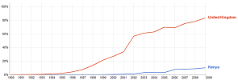

Digital Divide
Causes of the Digital Divide
Geographic
Access to the world of information is also dependent on where you live. Geographical factor can also affect people and their lives and they how they behave towards the latest technology. Most of the time this affects people in the poorer countries but it can also affect the people in the richer countries for example people who live on the countryside may not have reliable Wi-Fi connection nor a good cellular connection restricting them from use such devices that may need a connection such services. This is because most of the service providers see no use of setting up a mast which sends and receives signals for only a few people and see it as a loss to set one up. To be able to get the best access to the information technology you must be living in the central areas of cities or the suburbs that surround these cities. Sometimes specific areas don't have their signals affected by other frequencies but don't have access to information technology but that is just because they may not have financial ability to set up networks in the area. Geographical location may influence a person's wealth or education. Wealthier families are more likely to have Internet access at home. Internet access also depends on which country you live in. Some countries have better communications links than others. There may be poor links in countries that have large areas with few people (eg deserts, mountains). The governments of some countries have schemes for education that involve providing hardware and Internet access for educational institutions as well as for communities. Schools, colleges and libraries may be connected to the Internet. The governments of poorer countries will not be able to do this. In the UK, some areas have access to broadband connections - some do not. In rural areas there may be fewer schemes for community access to the Internet (libraries, cyber cafes etc).
Internet users (% of population) in UK compared with Kenya (Click to enlarge)
{kind=link}
Data from: World Bank, World Development Indicators